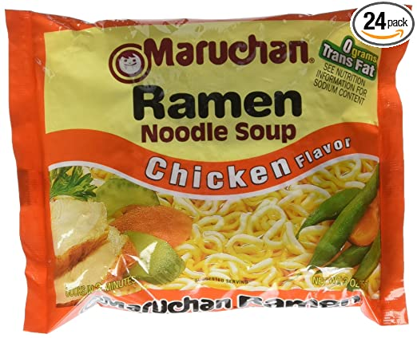

Noodles

Description
This dish is a very simple "ramen" that
is cooked in the microwave for a very quick
meal.
Ingredients
- Water
- Bowl
- Ramen Noodles
- Ramen Spice Package
Steps
- Tear open ramen package to extract the noodles themselves
and the spice package
- Place the noodles in a bowl and cover with water
- Use the microwave to heat the contents for 3 minutes on high heat
- Carefully remove the bowl from the microwave and add the spice package
- Mix the contents for roughly 1 minute and enjoy